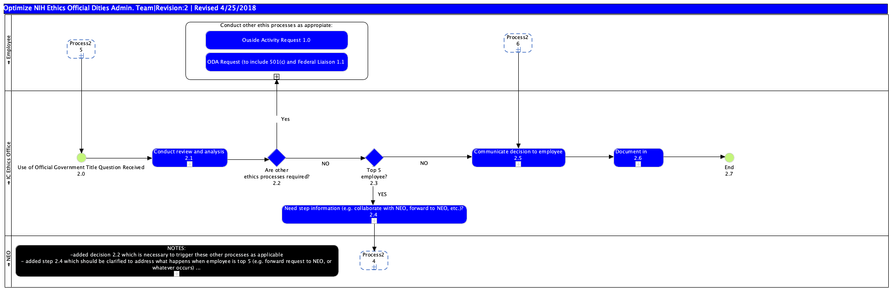

Publishing Project
Project Link
Page URL
with Name
Business Process Diagram - Use of Official Government Title
link
Jump to:
Please select a model element
Optimize NIH Ethics Official Dities Admin. Team|Revision:2 | Revised 4/25/2018 : Freehand Shape
Process26 : Sub-Process
Process25 : Sub-Process
NOTES: -added decision 2.2 which is necessary to trigger these other processes as applicable - added step 2.4 which should be clarified to address what happens when employee is top 5 (e.g. forward request to NEO, or whatever occurs) -added collaboration with employee : Sub-Process
Process24 : Sub-Process
Need step information (e.g. collaborate with NEO, forward to NEO, etc.)? 2.4 : Sub-Process
Are other ethics processes required? 2.2 : Gateway
End 2.7 : Start Event
Document in EMIS 2.6 : Sub-Process
Communicate decision to employee 2.5 : Sub-Process
Top 5 employee? 2.3 : Gateway
Conduct review and analysis 2.1 : Sub-Process
Use of Official Government Title Question Received 2.0 : Start Event
NEO : Pool
Employee : Pool
IC Ethics Office : Pool
Ouside Activity Request 1.0 : Task
Conduct other ethis processes as appropiate: : Sub-Process
ODA Request (to include 501(c) and Federal Liaison 1.1 : Task

Model Elements
ID
Name
Description
Optimize NIH Ethics Official Dities Admin. Team|Revision:2 | Revised 4/25/2018 : Freehand Shape
Process26 : Sub-Process
Process25 : Sub-Process
NOTES: -added decision 2.2 which is necessary to trigger these other processes as applicable - added step 2.4 which should be clarified to address what happens when employee is top 5 (e.g. forward request to NEO, or whatever occurs) -added collaboration with employee : Sub-Process
Process24 : Sub-Process
Need step information (e.g. collaborate with NEO, forward to NEO, etc.)? 2.4 : Sub-Process
Are other ethics processes required? 2.2 : Data-Based Exclusive Decision/Merge (XOR)
End 2.7 : Start Event
Document in EMIS 2.6 : Sub-Process
Communicate decision to employee 2.5 : Sub-Process
Top 5 employee? 2.3 : Data-Based Exclusive Decision/Merge (XOR)
Conduct review and analysis 2.1 : Sub-Process
Use of Official Government Title Question Received 2.0 : Start Event
NEO : Pool
Employee : Pool
IC Ethics Office : Pool
BP01
Ouside Activity Request 1.0 : Task
BP39
Conduct other ethis processes as appropiate: : Sub-Process
BP40
ODA Request (to include 501(c) and Federal Liaison 1.1 : Task
Publishing Project